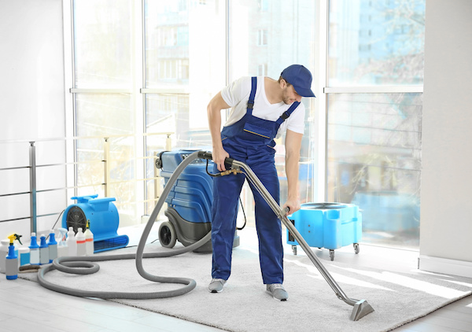
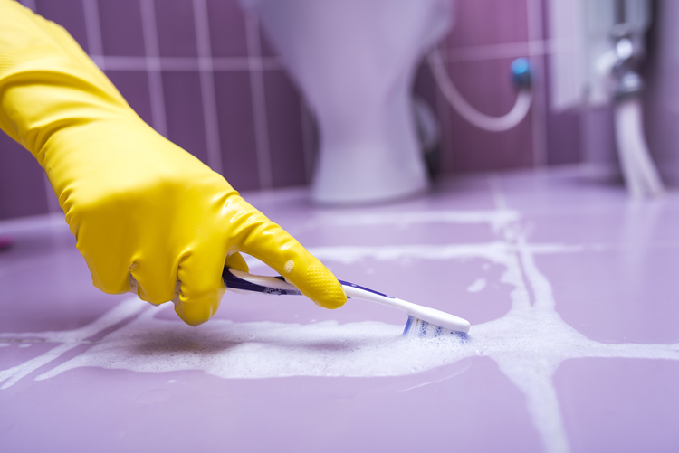

Deep cleaning



Deep Cleaning mulai dari Rp 25k per m2 Layanan ini merupakan pembersihan secara mendalam yang dilakukan untuk rumah pasca-renovasi atau banjir. KliknClean juga menghadirkan deep cleaning layanan untuk kamar mandi atau toilet. Jangkauan layanan jasa: Bali, Bandung, Bekasi, Depok, Jakarta, Medan, Pontianak, Surabaya, Tangerang, dan Jambi Tenaga kerja berpengalaman dan terpercaya.